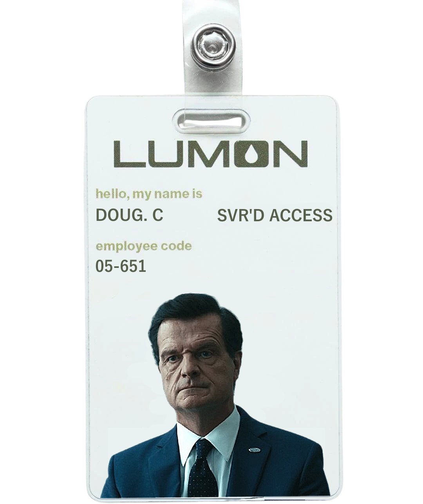

PERSONAGENS



Em um futuro próximo, a empresa Lumon Industries desenvolveu um procedimento inovador chamado severance, que separa completamente as memórias dos funcionários entre o trabalho e a vida pessoal. Durante o expediente, eles não lembram nada de suas vidas fora da empresa; ao sair, esquecem tudo o que aconteceu no trabalho. Essa divisão radical cria duas versões de cada pessoa: uma que só existe no escritório e outra que nunca sabe o que faz lá dentro.
O protagonista, Mark Scout (Adam Scott), trabalha no setor de Refinamento de Dados e lidera uma pequena equipe submetida a essa separação mental. Apesar da rotina estranha e cheia de mistérios, ele e seus colegas seguem as regras da empresa sem questionar. No entanto, quando um ex-colega reaparece com informações alarmantes sobre a Lumon, Mark começa a suspeitar que há algo muito errado acontecendo.
Conforme investiga, Mark descobre que a empresa esconde segredos profundos sobre o programa severance e seus verdadeiros propósitos. O que parecia ser apenas um método de separação entre vida profissional e pessoal revela-se uma experiência sombria e controladora. Ao mesmo tempo, seus colegas começam a desenvolver dúvidas e conflitos internos sobre identidade e liberdade, intensificando a tensão dentro da empresa.
Com um enredo que mistura ficção científica e suspense psicológico, Severance explora temas como controle corporativo, ética no trabalho e identidade. A série se destaca por seu ambiente minimalista e perturbador, que reforça a sensação de isolamento e alienação dos personagens. Além da trama intrigante, a produção chama atenção pela estética visual precisa, atuações marcantes e uma atmosfera crescente de tensão.
À medida que a história avança, o clima de paranoia se intensifica, trazendo mais perguntas do que respostas a cada nova descoberta. A tensão entre os funcionários e a empresa cresce, culminando em momentos de grande impacto emocional e psicológico. Severance não apenas prende a atenção com seu suspense bem elaborado, mas também provoca reflexões profundas sobre até que ponto as corporações podem ir para controlar seus funcionários em nome da produtividade.
Criada por Dan Erickson e dirigida principalmente por Ben Stiller, a série combina um estilo visual marcante com uma narrativa complexa e envolvente. O elenco conta com Adam Scott no papel do protagonista, entregando uma atuação sensível e intensa. Patricia Arquette interpreta Harmony Cobel, uma figura misteriosa e imponente dentro da Lumon. John Turturro, Britt Lower e Christopher Walken completam o elenco com performances cativantes, tornando a experiência ainda mais impactante.
Com um roteiro bem estruturado e direção precisa, Severance mergulha o espectador em um universo claustrofóbico e intrigante, onde a busca por liberdade e identidade se torna cada vez mais urgente. A narrativa se desenrola em camadas, revelando detalhes sutis que fazem de cada episódio uma experiência repleta de surpresas e reviravoltas. A série não só entretém, mas também instiga questionamentos sobre o impacto do trabalho na vida pessoal e os limites do poder corporativo.